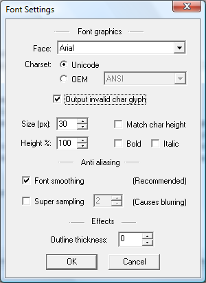

You can open the font settings dialog by going to the Options menu and choosing Font settings, or you can just press F on the keyboard.
This dialog controls the properties of the font, i.e. the character set, and looks.
These settings will let you choose the font face to use, and a few other options, such as whether the unicode or OEM character set is to be used.
When fonts are generated with anti-aliasing it is recommended that only font smoothing is used. If super sampling is used the resulting font may loose a bit of its sharpness due to averaging when down sampling. This is especially noticeable when small fonts are generated.
The fonts can optionally be generated with a baked in outline of variable width. If outline is used the font will take up a bit more texture space, but on the other hand the outline doesn't have to be generated at run-time when drawing the text.